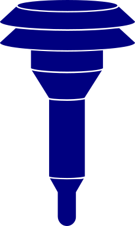

<!doctype html>
<html lang="en">

<head>
    <meta charset="utf-8">
    <meta http-equiv="X-UA-Compatible" content="IE=edge">
    <meta name="viewport" content="initial-scale=1,user-scalable=no,maximum-scale=1,width=device-width">
    <meta name="mobile-web-app-capable" content="yes">
    <meta name="apple-mobile-web-app-capable" content="yes">
    <link rel="stylesheet" href="css/leaflet.css">
    <link rel="stylesheet" href="css/qgis2web.css">
    <link rel="stylesheet" href="css/fontawesome-all.min.css">
    <link rel="stylesheet" href="css/leaflet.groupedlayercontrol.min.css">
    <link rel="stylesheet" href="css/leaflet-control-credits.css" />
    <style>
        body {
            padding: 0;
            margin: 0;
        }

        html,
        body,
        #map {
            height: 100%;
            width: 100%;
            padding: 0;
            margin: 0;
        }
    </style>
    <title></title>
</head>

<body>
    <div id="map">
    </div>
    <script src="js/jquery-3.4.0.min.js"></script>
    <script src="js/qgis2web_expressions.js"></script>
    <script src="js/leaflet.js"></script>
    <script src="js/leaflet-svg-shape-markers.min.js"></script>
    <script src="js/leaflet.rotatedMarker.js"></script>
    <script src="js/leaflet.pattern.js"></script>
    <script src="js/leaflet-hash.js"></script>
    <script src="js/Autolinker.min.js"></script>
    <script src="js/rbush.min.js"></script>
    <script src="js/labelgun.min.js"></script>
    <script src="js/labels.js"></script>
    <script src="js/leaflet.groupedlayercontrol.min.js"></script>

    <script src="js/leaflet-control-credits.js"></script>

    <script src="js/TileLayer.Grayscale.js"></script>

    <script src="data/ActiveSensors_1.js"></script>
    <script src="data/AURN_Soton_Feb19Stats_2.js"></script>
    <script src="data/DiffusionTubeMeasurements_MergedAndFixed_2.js"></script>
    <script src="data/Perceptions.js"></script>
    <script>
        var map = L.map('map', {
            zoomControl: true,
            maxZoom: 28,
            minZoom: 1
        }).fitBounds([
            [50.91680906587142, -1.4009899783471849],
            [50.928980620670686, -1.3647479492724635]
        ]);
        var hash = new L.Hash(map);
        map.attributionControl.setPrefix(
            '<a href="https://github.com/tomchadwin/qgis2web" target="_blank">qgis2web</a> &middot;\
             <a href="http://leafletjs.com" title="A JS library for interactive maps">Leaflet</a> &middot; \
             &copy; <a href="https://www.openstreetmap.org/copyright">OpenStreetMap</a> contributors &middot;\
             Sensor data from <a href="https://breathingspaces.org.uk/">Breathing Spaces</a>, \
             <a href="https://uk-air.defra.gov.uk/networks/network-info?view=aurn">Defra AURN</a>, \
             <a href="https://www.southampton.gov.uk/environmental-issues/pollution/air-quality/monitoring/nitrogen-dioxide-diffusion-tubes.aspx">SCC</a> &nbsp; &nbsp; &nbsp;'
        );
        var bounds_group = new L.featureGroup([]);

        function setBounds() {}

        ///////////////////////////////////////////////////////////////////////////////////
        // Background map
        ///////////////////////////////////////////////////////////////////////////////////
        var layer_OSM = L.tileLayer(' https://a.tile.openstreetmap.org/{z}/{x}/{y}.png ', {
            opacity: 0.4
        });
        layer_OSM.addTo(map);
        map.addLayer(layer_OSM);

        ///////////////////////////////////////////////////////////////////////////////////
        // Active (Breathing Spaces) sensors layer
        ///////////////////////////////////////////////////////////////////////////////////
        function pop_ActiveSensors_1(feature, layer) {
            var popupContent = '<iframe src="' + feature.properties['graph_url'] + '" width="450" height="200" frameborder="0"></iframe>' +
                '<br><a href="https://opennms.computenodes.net/grafana/d/G2NTzy6mk/st-denys-detailed-measurements?orgId=1&var-node=mqtt%3A' + feature.properties['sensor_id'] + '">More details</a>' +
                '<br><b>Disclaimer:</b> The data presented has not been recorded using legally validated reference equipment and should therefore be treated with caution.'
            layer.bindPopup(popupContent, {maxWidth:430});
        }

        function style_ActiveSensors_1_0() {
            return {
                pane: 'pane_ActiveSensors_1',
                rotationAngle: 0.0,
                rotationOrigin: 'center center',
                icon: L.icon({
                    iconUrl: 'markers/sensor_icon_darkblue.svg',
                    iconSize: [26.599999999999998, 26.599999999999998]
                }),
            }
        }
        map.createPane('pane_ActiveSensors_1');
        map.getPane('pane_ActiveSensors_1').style.zIndex = 401;
        map.getPane('pane_ActiveSensors_1').style['mix-blend-mode'] = 'normal';
        var layer_ActiveSensors_1 = new L.geoJson(json_ActiveSensors_1, {
            attribution: '',
            pane: 'pane_ActiveSensors_1',
            onEachFeature: pop_ActiveSensors_1,
            pointToLayer: function (feature, latlng) {
                var context = {
                    feature: feature,
                    variables: {}
                };
                return L.marker(latlng, style_ActiveSensors_1_0(feature));
            },
        });
        bounds_group.addLayer(layer_ActiveSensors_1);
        map.addLayer(layer_ActiveSensors_1);


        ///////////////////////////////////////////////////////////////////////////////////
        // AURN layer
        ///////////////////////////////////////////////////////////////////////////////////
        function pop_AURN_Soton_Feb19Stats_2(feature, layer) {
            var popupContent = '<h3>AURN Site ' + feature.properties['site_name'] + '</h3>' +
                '<a href="graphs/' + feature.properties['site_id'] + '.html">\
                        </a>' +
                '(click graph to get interactive version)<br/><br/>\
                     <b>Feb 2019 PM<sub>10</sub> statistics:</b>' +
                '<table>\
                    <tr>\
                        <td><b>Mean:</b> </td> <td colspan="2">' + (feature.properties['mean'] !== null ? Autolinker
                    .link(String(feature.properties['mean'])) : '') + '</td>\
                    </tr>\
                    <tr>\
                        <td><b>Max:</b> </td> <td colspan="2">' + (feature.properties['max'] !== null ? Autolinker
                    .link(String(feature.properties['max'])) : '') + '</td>\
                    </tr>\
                    <tr>\
                        <td><b>Min:</b> </td> <td colspan="2">' + (feature.properties['min'] !== null ? Autolinker
                    .link(String(feature.properties['min'])) : '') + '</td>\
                    </tr>\
                    <tr>\
                        <td><b>Median:</b> </td> <td colspan="2">' + (feature.properties['50%'] !== null ? Autolinker
                    .link(String(feature.properties['50%'])) : '') + '</td>\
                    </tr>\
                    </table>';
            layer.bindPopup(popupContent, {
                maxHeight: 400
            });
        }

        function style_AURN_Soton_Feb19Stats_2_0(feature) {
            return {
                pane: 'pane_AURN_Soton_Feb19Stats_2',
                radius: 10.0,
                opacity: 1,
                color: 'rgba(35,35,35,1.0)',
                dashArray: '',
                lineCap: 'butt',
                lineJoin: 'miter',
                weight: 1,
                fill: true,
                fillOpacity: 1,
                fillColor: 'rgba(150,1,84,1.0)',
            }
        }
        map.createPane('pane_AURN_Soton_Feb19Stats_2');
        map.getPane('pane_AURN_Soton_Feb19Stats_2').style.zIndex = 402;
        map.getPane('pane_AURN_Soton_Feb19Stats_2').style['mix-blend-mode'] = 'normal';
        var layer_AURN_Soton_Feb19Stats_2 = new L.geoJson(json_AURN_Soton_Feb19Stats_2, {
            attribution: '',
            pane: 'pane_AURN_Soton_Feb19Stats_2',
            onEachFeature: pop_AURN_Soton_Feb19Stats_2,
            pointToLayer: function (feature, latlng) {
                var context = {
                    feature: feature,
                    variables: {}
                };
                return L.circleMarker(latlng, style_AURN_Soton_Feb19Stats_2_0(feature));
            },
        });
        bounds_group.addLayer(layer_AURN_Soton_Feb19Stats_2);
        map.addLayer(layer_AURN_Soton_Feb19Stats_2);


        ///////////////////////////////////////////////////////////////////////////////////
        // Diffusion Tubes layer
        ///////////////////////////////////////////////////////////////////////////////////
        function pop_DiffusionTubeMeasurements_MergedAndFixed_2(feature, layer) {
            var popupContent = '<h3>Diffusion tube at ' + feature.properties["Name"] + '</h3>' +
                '<b>2017 average:</b> ' + parseFloat(feature.properties['local adjusted']).toFixed(0) + '&micro;g/m<sup>3</sup>'
            layer.bindPopup(popupContent, {
                maxHeight: 400
            });
        }

        function style_DiffusionTubeMeasurements_MergedAndFixed_2_0(feature) {
            if (feature.properties['local adjusted'] >= 0.000000 && feature.properties['local adjusted'] <= 40.000000) {
                return {
                    pane: 'pane_DiffusionTubeMeasurements_MergedAndFixed_2',
                    shape: 'square',
                    radius: 6.0,
                    opacity: 1,
                    color: 'rgba(126,126,126,1.0)',
                    dashArray: '',
                    lineCap: 'butt',
                    lineJoin: 'miter',
                    weight: 1,
                    fill: true,
                    fillOpacity: 1,
                    fillColor: 'rgba(27,169,239,1.0)',
                }
            }
            if (feature.properties['local adjusted'] >= 40.000000 && feature.properties['local adjusted'] <=
                55.422097) {
                return {
                    pane: 'pane_DiffusionTubeMeasurements_MergedAndFixed_2',
                    shape: 'square',
                    radius: 6.0,
                    opacity: 1,
                    color: 'rgba(126,126,126,1.0)',
                    dashArray: '',
                    lineCap: 'butt',
                    lineJoin: 'miter',
                    weight: 1,
                    fill: true,
                    fillOpacity: 1,
                    fillColor: 'rgba(255,0,0,1.0)',
                }
            }
        }
        map.createPane('pane_DiffusionTubeMeasurements_MergedAndFixed_2');
        map.getPane('pane_DiffusionTubeMeasurements_MergedAndFixed_2').style.zIndex = 402;
        map.getPane('pane_DiffusionTubeMeasurements_MergedAndFixed_2').style['mix-blend-mode'] = 'normal';
        var layer_DiffusionTubeMeasurements_MergedAndFixed_2 = new L.geoJson(
            json_DiffusionTubeMeasurements_MergedAndFixed_2, {
                attribution: '',
                pane: 'pane_DiffusionTubeMeasurements_MergedAndFixed_2',
                onEachFeature: pop_DiffusionTubeMeasurements_MergedAndFixed_2,
                pointToLayer: function (feature, latlng) {
                    var context = {
                        feature: feature,
                        variables: {}
                    };
                    return L.shapeMarker(latlng, style_DiffusionTubeMeasurements_MergedAndFixed_2_0(feature));
                },
            });
        bounds_group.addLayer(layer_DiffusionTubeMeasurements_MergedAndFixed_2);
        map.addLayer(layer_DiffusionTubeMeasurements_MergedAndFixed_2);


        ///////////////////////////////////////////////////////////////////////////////////
        // Perceptions layer
        ///////////////////////////////////////////////////////////////////////////////////

        var json_Perceptions_AirQuality = json_AllPerceptions.features.filter(function (entry) {
            return entry.properties.data.Type === 'Air quality concerns';
        });

        var json_Perceptions_Health = json_AllPerceptions.features.filter(function (entry) {
            return entry.properties.data.Type === 'Health concerns';
        });

        var json_Perceptions_Assets = json_AllPerceptions.features.filter(function (entry) {
            return entry.properties.data.Type === 'Neighbourhood assets';
        });

        var json_Perceptions_Change = json_AllPerceptions.features.filter(function (entry) {
            return entry.properties.data.Type === 'Ideas for change';
        });

        function pop_Perceptions(feature, layer) {
            var popupContent = '<h3>' + feature.properties["name"] + '</h3>' + feature.properties['data']['Comment'].split('\n').join('<br/>');
            layer.bindPopup(popupContent, {
                maxHeight: 400
            });
        }

        function speech_bubble_with_color(color) {
            return '<svg xmlns="http://www.w3.org/2000/svg" viewBox="0 0 842.777 690.811" height="26.59" width="26.59" version="1"><path d="M384.252.911c-194.4 11.1-351.2 106-380 230-10.9 46.7-.6 98.9 28.1 142.4 14.2 21.6 36.9 46.2 59 64 70.9 56.9 175.4 93.4 288.5 100.5 21 1.4 63.2 1.4 81.7.1l14.3-1.1 153.6 77.2c84.4 42.4 153.6 76.9 153.8 76.8.1-.2-28.2-44.5-63-98.4-34.9-53.9-63.4-98.2-63.4-98.5 0-.3 7.9-4.3 17.4-8.9 61.9-29.7 112.3-72.1 139.9-117.6 29.1-48 36.1-99.5 20.6-150-31.8-103.2-155.3-185.5-314.8-210-42.9-6.5-92.6-8.9-135.7-6.5z" fill="' +
                        color + '" stroke="black" stroke-width="10"/></svg>'
        }

        PERCEPTIONS_AQ_COLOR = '#1f78b4'
        PERCEPTIONS_HEALTH_COLOR = '#735290'
        PERCEPTIONS_ASSETS_COLOR = '#b2df8a'
        PERCEPTIONS_CHANGE_COLOR = '#CDDDDD'

        function style_Perceptions(feature, color) {
            return {
                rotationAngle: 0.0,
                rotationOrigin: 'center center',
                icon: L.divIcon({
                    className: 'speechbubble_icon',
                    html: speech_bubble_with_color(color),
                    iconSize: [26.599999999999998, 26.599999999999998],
                    iconAnchor: [26, 20]
                }),
            }
        }
        var layer_Perceptions_AQ = new L.geoJson(
            json_Perceptions_AirQuality, {
                attribution: '',
                onEachFeature: pop_Perceptions,
                pointToLayer: function (feature, latlng) {
                    var context = {
                        feature: feature,
                        variables: {}
                    };
                    return L.marker(latlng,
                        style_Perceptions(feature, PERCEPTIONS_AQ_COLOR));
                },
            });
        bounds_group.addLayer(layer_Perceptions_AQ);
        //map.addLayer(layer_Perceptions_AQ);

        var layer_Perceptions_Health = new L.geoJson(
            json_Perceptions_Health, {
                attribution: '',
                onEachFeature: pop_Perceptions,
                pointToLayer: function (feature, latlng) {
                    var context = {
                        feature: feature,
                        variables: {}
                    };
                    return L.marker(latlng,
                        style_Perceptions(feature, PERCEPTIONS_HEALTH_COLOR));
                },
            });
        bounds_group.addLayer(layer_Perceptions_Health);
        //map.addLayer(layer_Perceptions_Health);

        var layer_Perceptions_Assets = new L.geoJson(
            json_Perceptions_Assets, {
                attribution: '',
                onEachFeature: pop_Perceptions,
                pointToLayer: function (feature, latlng) {
                    var context = {
                        feature: feature,
                        variables: {}
                    };
                    return L.marker(latlng,
                        style_Perceptions(feature, PERCEPTIONS_ASSETS_COLOR));
                },
            });
        bounds_group.addLayer(layer_Perceptions_Assets);
        //map.addLayer(layer_Perceptions_Assets);

        var layer_Perceptions_Change = new L.geoJson(
            json_Perceptions_Change, {
                attribution: '',
                onEachFeature: pop_Perceptions,
                pointToLayer: function (feature, latlng) {
                    var context = {
                        feature: feature,
                        variables: {}
                    };
                    return L.marker(latlng,
                        style_Perceptions(feature, PERCEPTIONS_CHANGE_COLOR));
                },
            });
        bounds_group.addLayer(layer_Perceptions_Change);
        //map.addLayer(layer_Perceptions_Change);

        ///////////////////////////////////////////////////////////////////////////////////
        // Legend
        ///////////////////////////////////////////////////////////////////////////////////
        var baseMaps = {};
        var groupedOverlays = {
            'Sensors': {
            'SCC Diffusion Tubes (NO<sub>2</sub>) (2017)<br />\
            <table>\
                <tr>\
                    <td class="legend-subitem" style="text-align: center; vertical-align: bottom;">\
                        </td>\
                    <td> Below legal limit (&lt; 40&micro;g/m<sup>3</sup>) </td>\
                </tr>\
                <tr>\
                    <td class="legend-subitem" style="text-align: center;"></td>\
                    <td> Above legal limit (&gt; 40&micro;g/m<sup>3</sup>) </td>\
                </tr>\
            </table>': layer_DiffusionTubeMeasurements_MergedAndFixed_2,
            'AURN PM<sub>2.5</sub>': layer_AURN_Soton_Feb19Stats_2,
            ' Breathing Spaces sensors': layer_ActiveSensors_1
            },
            'Community perceptions': {
            [speech_bubble_with_color(PERCEPTIONS_AQ_COLOR) + '&nbsp; Air Quality concerns']: layer_Perceptions_AQ,
            [speech_bubble_with_color(PERCEPTIONS_HEALTH_COLOR) + '&nbsp; Health concerns']: layer_Perceptions_Health,
            [speech_bubble_with_color(PERCEPTIONS_ASSETS_COLOR) + '&nbsp; Community assets']: layer_Perceptions_Assets,
            [speech_bubble_with_color(PERCEPTIONS_CHANGE_COLOR) + '&nbsp; Ideas for change']: layer_Perceptions_Change,
            }
        };
        L.control.groupedLayers(baseMaps, groupedOverlays, {
            collapsed: false
        }).addTo(map);

        var credctrl = L.controlCredits({
                image: "./images/logo.jpeg",
                link: "https://breathingspaces.org.uk/",
                text: "Map created by the Breathing Spaces project, click here for more information",
                width: 150,
                height: 150
            }).addTo(map);

        setBounds();
    </script>
</body>

</html>